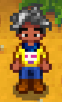
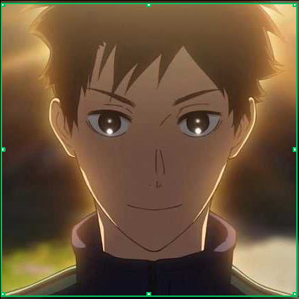

小林 (Lin)
小林

| 生日 | 六月一日 |
| 星座 | 双子座 |
| MBTI | INFP (小画家) |
| 家乡 | 风筝故乡 |
| 最爱 | 咖啡、牛肉丸、种植 |
“我挺喜欢现在的生活的，对未来我也充满希望。”
人物关系
居住情况：小林目前有两位室友，但由于工作或生活习惯的原因，他们经常不在家，这给了小林很多安静的个人空间。
好友：小林和小李是关系非常密切的朋友。他们几乎每天都会一起吃午饭和晚饭，下班后也习惯结伴回家。
日常活动：在闲暇时间，他们会联机打游戏，或者一起出门逛街、尝试各种美食，是生活中不可或缺的伙伴。
日程表
春季： 他通常在早上九点后起床。
礼物喜好
| 最爱 | 耳机、鼠标、键盘、跑鞋... |
| 喜欢 | 游戏、咖啡、盆栽、肯德基... |
| 一般 | 蛋糕、水果... |
| 讨厌 | 肝脏、生姜... |
电影喜好
| 最爱 | 《异形》 |
| 喜欢 | 《铁血战士》 |
| 不喜欢 | 《死神来了》 |
特殊事件
2心： 邀请他一起去看荷花时触发...
4心: 共同参加好友婚礼并独处时触发...
6心: 遇到考试节点陪伴全程时触发...
8心: 送出羽毛球花时关系升级...
♥好感度事件
出门会随身携带纸巾，并在饭后或需要去卫生间时贴心递上。
会牢牢记住对方不喜欢的东西和对方喜欢的东西，还记得对方随口提过的想吃的餐厅。
性格温柔，情绪稳定，从来不乱发脾气，能够有效沟通。
约会时会提前做攻略，安排活动，学习能力强。
无抽烟喝酒等不良嗜好，有跑步习惯，健身，修炼胸肌中。
想要的礼物
GPW猛男粉 <\p>
肖像
